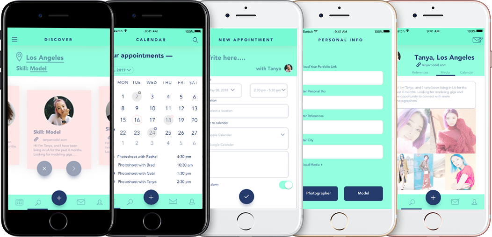
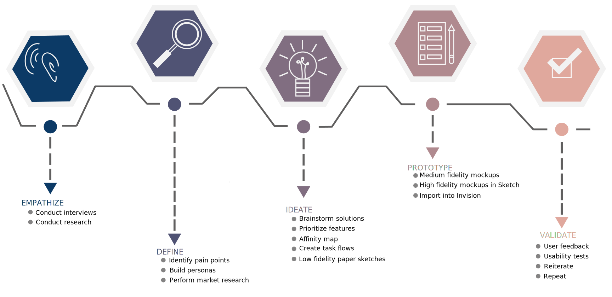
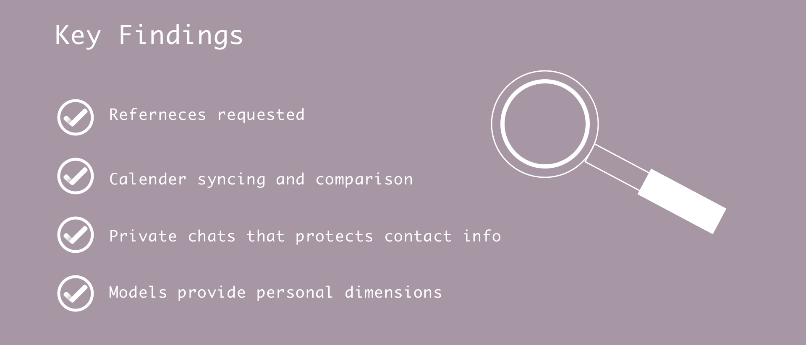
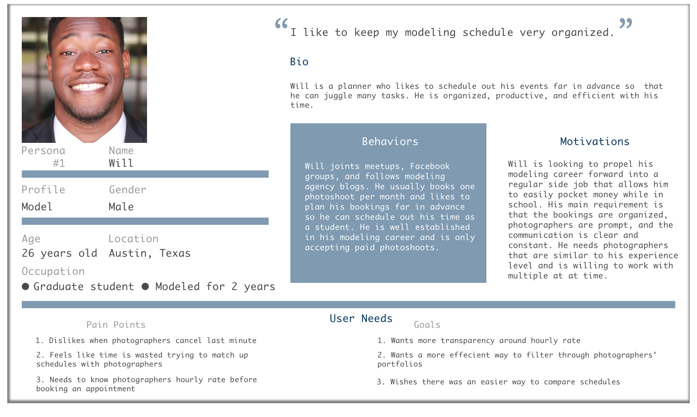
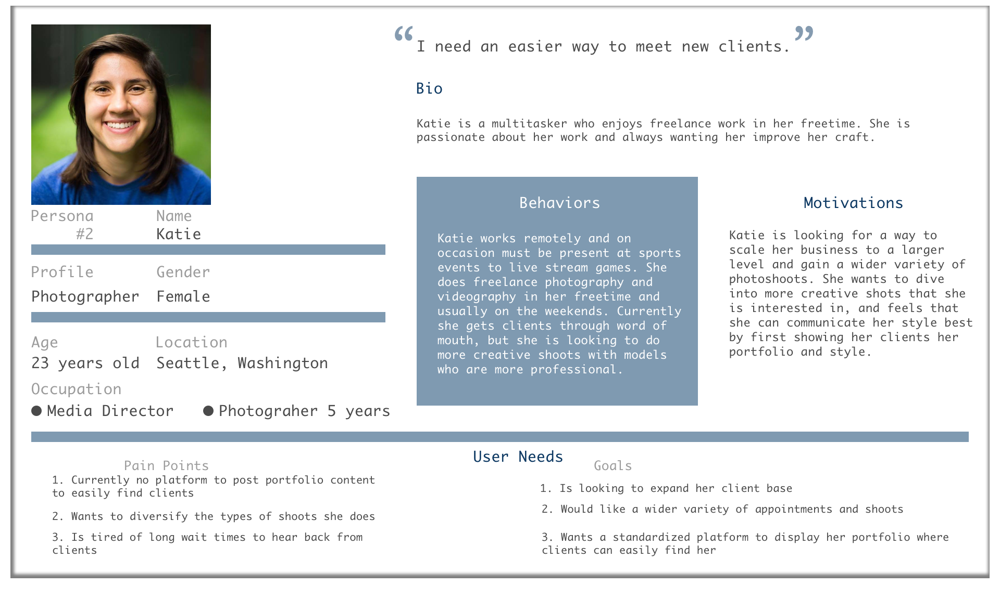
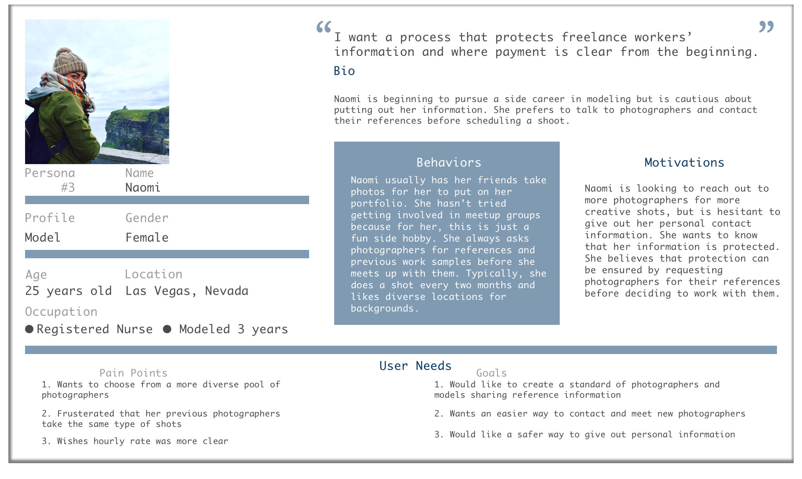
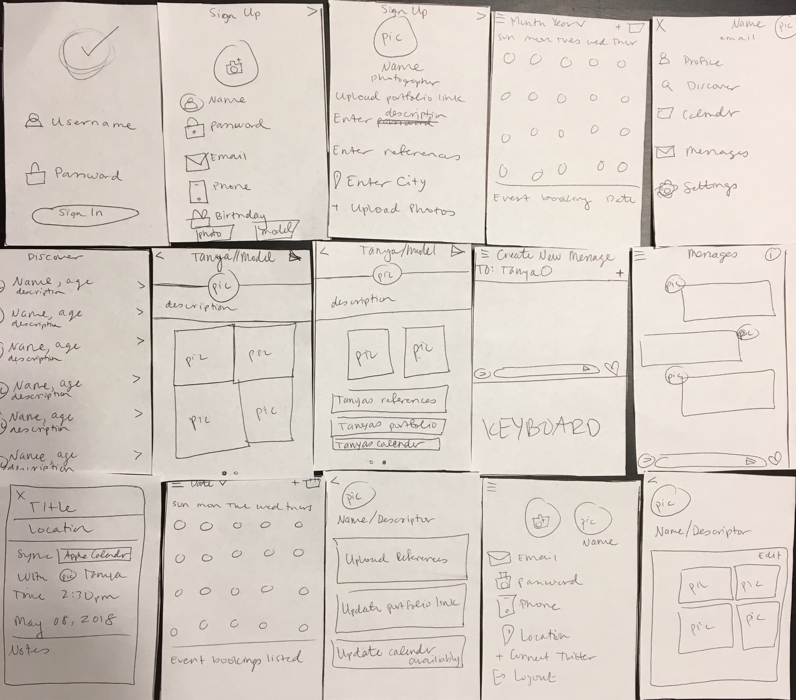
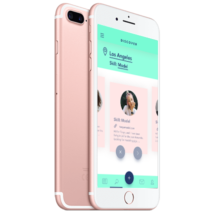

Overview: Photo Ready simplifies communication barriers for freelance photographers and models by featuring calendar syncing capabilities and options for profile pages to have references listed and portfolio sites linked.
Purpose: It became clear that for people who do freelance work part-time, the most difficult part about their side gig is finding the time to meet with clients. Photo Ready was inspired after idenifying that no app can currently match clients together based on talent level and assist in scheduling.
Objective: The idea behind the Photo Ready project was to find the best way to meet the needs of freelance creative workers. I built out a prototype that collects locations of workers, allow them to “discover” one another, browse each other’s portfolios and references, safely message one another, and find a mutual time to meet through syncing calendar availiability.
Design Process:
Before designing the product, I talked to potential users of my app as well as performed market research to see what the leading competitors were doing. I attended an Austin Photography meet up for creatives and models and interviewed anyone who would spend 15 minutes with me.
View Interview Questions Here
By building a few personas, I was able to keep in mind my target audience throughout my entire design process and prioritize features due to user feedback.



No platform that did what Photo Ready was going to do, so I evaluated competing apps that offered any service relatable to what Photo Ready could offer. Its platform would include a "discovering people" feature, so I compared companies that offered the capability for people to communicate. Additionally I looked at calendar apps and messaging platforms to observe the best interface for accomplishing user needs in a clear and concise way.
Competitor Analysis
| Brand | Messaging | Discover | Reviews | References | Bio | Photos | Portfolio | Calender Sync |
|---|---|---|---|---|---|---|---|---|
| Meetup | Y | Y | N | N | Y | N | Y | Y |
| Bumble Friends | Y | Y | N | N | Y | Y | N | N |
| Google Calender | N | N | N | N | N | N | N | Y |
| Apple Calender | N | N | N | N | N | N | N | N |
| Y | Y | N | N | Y | Y | Y | Y | |
| Tinder | Y | Y | N | N | Y | Y | N | N |
| Facebook Messenger | Y | N | N | N | N | Y | N | N |
| Google Hangouts | Y | N | N | N | N | Y | N | N |
| GroupMe | Y | N | N | N | N | Y | N | Y |
| What's App | Y | N | N | N | N | Y | N | Y |
| Y | Y | Y | Y | Y | Y | Y | N |
I decided against an icon navigation bar across the bottom of the screen because I wanted to maximize my screen space and use more local navigation. One button for global navigation was created that caused a side tool bar to pop up, providing access to the different screens.
Low fidelity mockups:
Medium fidelity mockups:

With the medium fidelity mockups up and running, usability tests were performed on Photo Ready. I chose to run usability tests on an unfinished product so I didn't waste time making a beautiful high fidelity design without taking into account user feedback, and so users didn't get attached to a certain visual design and expect the product to be fully completed. Some people were asked to click through the app while I silently observed, seeing what pain points they had or if there were any unclear buttons. Others were asked to perform a specific task flow:
- Create an account and message a photographer
- Login and create an event
- Change your profile picture
- Look at the most recent model you have an appointment with and view their references
- Upload your portfolio link
Visual Design

Click Through Photo Ready Prototype in Invision
With the style guide set, high fidelity mockups were made in Sketch and imported into InVision.
High fidelity mockups:

